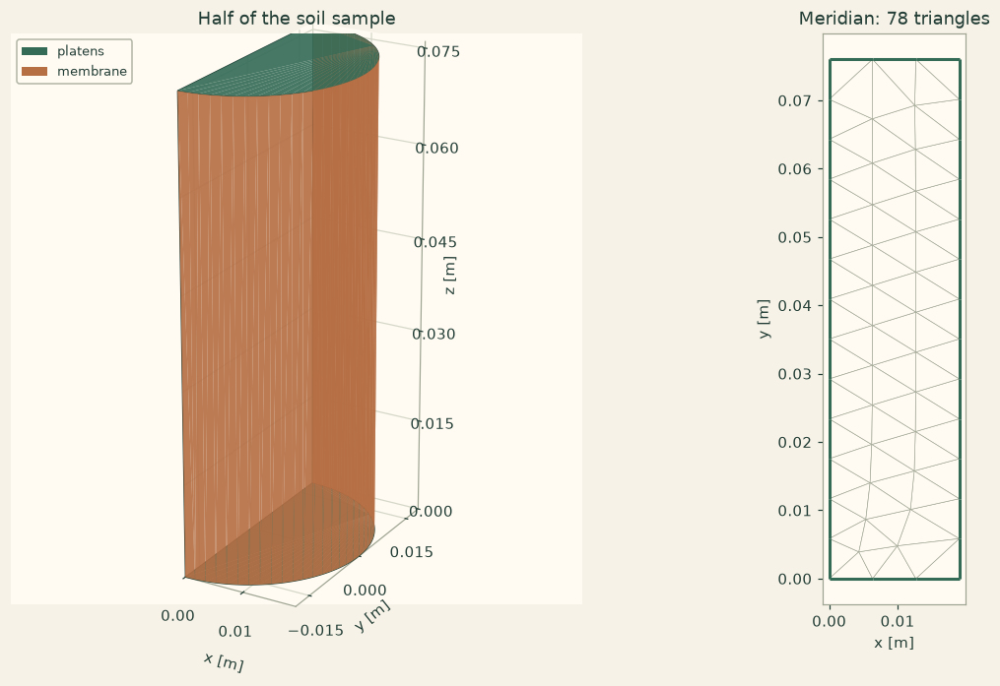

Docs › Examples › Drained triaxial test
Soil and rock plasticity · 2D-axisymmetric
Drained triaxial test
A cylindrical soil sample is compressed under three cell pressures until it fails, as in the laboratory triaxial test.
Run locally with OneSimulation. The example downloads are free. Running them requires an activated runtime. Runtime Alpha 0.2.1a7 · CPython 3.13 on macOS (Apple Silicon), Ubuntu 22.04 (x86-64), and Windows x64. Installation and activation · View pilot plans. Scope of the reference checks.

What it computes
OneSimulation reads the half sample from a STEP file, cuts it to its meridian and solves axisymmetric elastoplasticity with the Mohr-Coulomb criterion and a dilatancy angle, applying the cell pressure on the membrane and moving the top platen. The script that builds the STEP file comes with the notebook.
What it checks
The failure deviators 117.32, 217.32 and 417.32 kPa for cell pressures of 50, 100 and 200 kPa, the Young's modulus from the stress-strain curve and the dilatancy rate 0.1910 agree with the closed-form Mohr-Coulomb solution to machine precision.
Geometry
The notebook starts at the import of the CAD file triaxial_test_mohr_coulomb.step: STEP (AP242), readable by any CAD program, with the names of the faces that the boundary conditions use. Put it next to the notebook.

The geometry script
The script triaxial_test_mohr_coulomb_geometry.py builds the geometry with the CAD objects of OneSimulation and writes the file. Change a dimension there, run it, and run the notebook again.
"""Geometry of the OneSimulation example "Drained triaxial test on a soil sample".
Builds the standard cylindrical soil sample, 38 mm in diameter and 76 mm high, with the CAD
objects of OneSimulation. Only the half x >= 0 is kept, so that its section in the plane y = 0 is
the meridian of the axisymmetric model. The part is written to triaxial_test_mohr_coulomb.step;
the faces are named top, bottom, outer_wall (the rubber membrane) and axis.x_min (the cut through
the axis).
"""
from onesim.cad.d3 import Box, Cylinder
radius, height = 0.019, 0.076
sample = Cylinder(radius=radius, length=height) & Box(
length=2 * radius,
width=4 * radius,
height=2 * height,
origin=(0.0, -2 * radius, -height / 2),
).named("axis")
sample.save("triaxial_test_mohr_coulomb.step")The notebook
The complete notebook, cell by cell. Run it to produce the figures and the comparison printout.
The triaxial test is the most common laboratory test for the strength of soils. A cylindrical sample in a rubber membrane is first brought to a cell pressure \(\sigma_3\) and then compressed axially by a moving platen while the cell pressure is kept. The axial stress rises until the sample fails; repeating the test at several cell pressures gives the friction angle and the cohesion of the soil.
The soil is modelled as an elastic-perfectly plastic Mohr-Coulomb material with the yield function and the plastic potential
(principal stresses, tension positive, \(\sigma_1\ge\sigma_2\ge\sigma_3\)), friction angle \(\varphi\), cohesion \(c\) and dilatancy angle \(\psi\).
Setup. A sample of 38 mm diameter and 76 mm height, \(E=20\) MPa, \(\nu=0.3\), \(c=5\) kPa, \(\varphi=30°\), \(\psi=5°\); cell pressures 50, 100 and 200 kPa; axial compression to 5 % strain. The sample comes from the CAD file triaxial_test_mohr_coulomb.step, written by triaxial_test_mohr_coulomb_geometry.py with the CAD objects of OneSimulation; the model lives on its meridian, \(r\ge0\).
| face | condition | |---|---| | axis.x_min (\(r=0\)) | \(u_r=0\) | | bottom | \(u_z=0\) (smooth platen) | | top | \(u_z\) prescribed (smooth platen) | | outer_wall (membrane) | normal stress \(-\sigma_3\) |
Reference. For smooth platens the sample stays uniform, and the Mohr-Coulomb solution is closed-form (e.g. D.M. Wood, Soil Behaviour and Critical State Soil Mechanics, Cambridge 1990; D.M. Potts and L. Zdravković, Finite Element Analysis in Geotechnical Engineering: Theory, Telford 1999). The deviator rises elastically as \(q=E\,\varepsilon_a\) with the volume change \((1-2\nu)\,\varepsilon_a\), up to the failure deviator
afterwards the sample flows at constant \(q\) and dilates at the rate \(-\mathrm d\varepsilon_v/\mathrm d\varepsilon_a=2\sin\psi/(1-\sin\psi)\) (volumetric strain counted positive in compression).
import numpy as np
from onesim.cad.exchange import load
from onesim.meshing import TriangularMesher
from onesim.physics.geotechnics import FrictionalSolid, MohrCoulombRock
from onesim.visualization import plots, theme
theme.set()Geometry and mesh
load returns the half sample, section its meridian in the plane \(y=0\): the first planar coordinate is the radius, the second the height.
sample = load("triaxial_test_mohr_coulomb.step")
radius, _, height = sample.size
meridian = sample.section((0, 1, 0))
faces = meridian.boundaries
mesh = TriangularMesher(target_size=0.006).generate(meridian)
fig = plots.figure(1, 2, size=(11, 6))
plots.geometry(
sample,
selection={
"platens": sample.boundaries.top | sample.boundaries.bottom,
"membrane": sample.boundaries.outer_wall,
},
labels=False,
camera=plots.Camera(elevation=22, azimuth=-60),
title="Half of the soil sample",
ax=fig[0],
)
plots.mesh(
mesh,
groups=("all",),
legend=False,
title=f"Meridian: {mesh.cell_count} triangles",
ax=fig[1],
)
plots.show()Model
The first step applies the cell pressure on all sides (the top platen moves by the elastic isotropic compression), then the top platen moves down in 20 steps to 5 % axial strain.
youngs_modulus, poisson_ratio, cohesion, friction, dilatancy = (
20e6,
0.3,
5e3,
np.radians(30),
np.radians(5),
)
soil = FrictionalSolid(
material=MohrCoulombRock(
youngs_modulus=youngs_modulus,
poisson_ratio=poisson_ratio,
cohesion=cohesion,
friction_angle=friction,
dilation_angle=dilatancy,
),
kinematics="axisymmetric",
)
pressures = (50e3, 100e3, 200e3)
compression = np.linspace(0.0, 0.05, 21)
results = {
cell: soil.solve(
mesh=mesh,
times=compression * height,
normal_tractions=((faces.outer_wall, -cell),),
displacements=(
(faces["axis.x_min"], "r", 0.0),
(faces.bottom, "z", 0.0),
(
faces.top,
"z",
(lambda start: lambda t: start - t)(
-cell * (1 - 2 * poisson_ratio) / youngs_modulus * height
),
),
),
)
for cell in pressures
}
top = np.isclose(results[pressures[0]].coordinates[:, 1], height)
rim = np.isclose(results[pressures[0]].coordinates[:, 0], radius) & np.isclose(
results[pressures[0]].coordinates[:, 1], height
)
deviator = {
cell: -result.reactions[:, top, 1].sum(axis=1) / (np.pi * radius**2) - cell
for cell, result in results.items()
}
volume = {
cell: compression
- 2
* (result.displacement[:, rim, 0][:, 0] - result.displacement[0, rim, 0][0])
/ radius
for cell, result in results.items()
}Comparison with the reference
Failure deviator, elastic stiffness and dilatancy rate for the three cell pressures.
failure = (
lambda cell: 2
* (cohesion * np.cos(friction) + cell * np.sin(friction))
/ (1 - np.sin(friction))
)
rate = 2 * np.sin(dilatancy) / (1 - np.sin(dilatancy))
print(
f"{'cell pressure':>13s} {'q_f [kPa]':>10s} {'closed form':>12s} {'deviation':>10s} {'E from q-ε [MPa]':>17s}"
f" {'-dε_v/dε_a':>11s} {'closed form':>12s}"
)
for cell in pressures:
q, v = deviator[cell], volume[cell]
print(
f"{cell / 1e3:9.0f} kPa {q[-1] / 1e3:10.3f} {failure(cell) / 1e3:12.3f} {100 * (q[-1] / failure(cell) - 1):+9.1e} %"
f" {q[1] / compression[1] / 1e6:17.4f} {(v[-2] - v[-1]) / (compression[-1] - compression[-2]):11.4f} {rate:12.4f}"
)
print(
"stress spread over the quadrature points at the end (uniform sample): "
f"{max(np.ptp(result.stress[-1, :, 1, 1]) for result in results.values()):.1e} Pa"
)Figure
Deviator and volume change against axial strain with the closed-form curves, the stress paths in the \(p\)-\(q\) plane with the failure line, and the Mohr circles at failure with the Mohr-Coulomb envelope \(\tau=c+\sigma\tan\varphi\).
strain = np.linspace(0, 0.05, 401)
angle = np.linspace(0, np.pi, 181)
mean = np.linspace(0, 350e3, 50)
slope = 6 * np.sin(friction) / (3 - np.sin(friction))
fig = plots.figure(2, 2, size=(14, 11))
plots.line(
points={
f"σ3 = {cell / 1e3:.0f} kPa": (100 * compression, deviator[cell] / 1e3)
for cell in pressures
},
reference={
f"σ3 = {cell / 1e3:.0f} kPa": (
100 * strain,
np.minimum(youngs_modulus * strain, failure(cell)) / 1e3,
)
for cell in pressures
},
xlabel="axial strain ε_a [%]",
ylabel="deviator q = σ_a - σ3 [kPa]",
title="Deviator: simulation (markers), closed form (dashed)",
legend="lower right",
ax=fig[0],
)
plots.line(
points={
f"σ3 = {cell / 1e3:.0f} kPa": (100 * compression, 100 * volume[cell])
for cell in pressures
},
reference={
f"σ3 = {cell / 1e3:.0f} kPa": (
100 * strain,
100
* np.where(
strain < failure(cell) / youngs_modulus,
(1 - 2 * poisson_ratio) * strain,
(1 - 2 * poisson_ratio) * failure(cell) / youngs_modulus
- rate * (strain - failure(cell) / youngs_modulus),
),
)
for cell in pressures
},
xlabel="axial strain ε_a [%]",
ylabel="volumetric strain ε_v [%] (compression positive)",
title="Volume change: compression, then dilatancy",
legend="lower left",
ax=fig[1],
)
plots.line(
y={
f"σ3 = {cell / 1e3:.0f} kPa": (
(cell + deviator[cell] / 3) / 1e3,
deviator[cell] / 1e3,
)
for cell in pressures
},
reference={
"failure line in compression": (
mean / 1e3,
(slope * mean + 6 * cohesion * np.cos(friction) / (3 - np.sin(friction)))
/ 1e3,
)
},
xlabel="mean stress p [kPa]",
ylabel="deviator q [kPa]",
title="Stress paths",
legend="upper left",
ax=fig[2],
)
plots.line(
y={
f"σ3 = {cell / 1e3:.0f} kPa": (
(cell + deviator[cell][-1] / 2 * (1 + np.cos(angle))) / 1e3,
deviator[cell][-1] / 2 * np.sin(angle) / 1e3,
)
for cell in pressures
},
reference={
"envelope τ = c + σ tan φ": (
np.r_[0.0, 800.0],
(cohesion + np.r_[0.0, 800e3] * np.tan(friction)) / 1e3,
)
},
xlimits=(0, 720),
ylimits=(0, 540),
xlabel="normal stress σ [kPa] (compression positive)",
ylabel="shear stress τ [kPa]",
title="Mohr circles of the simulation at failure",
legend="upper left",
ax=fig[3],
)
plots.show()Going further
Set the dilatancy angle to zero to see the volume stay constant during flow, or equal to the friction angle (associated flow) to see the strong dilatancy that makes associated models stiff in confined problems. Replace MohrCoulombRock by DruckerPragerSoil with the same parameters: its compression cone gives the same failure deviator here, but a different dilatancy.